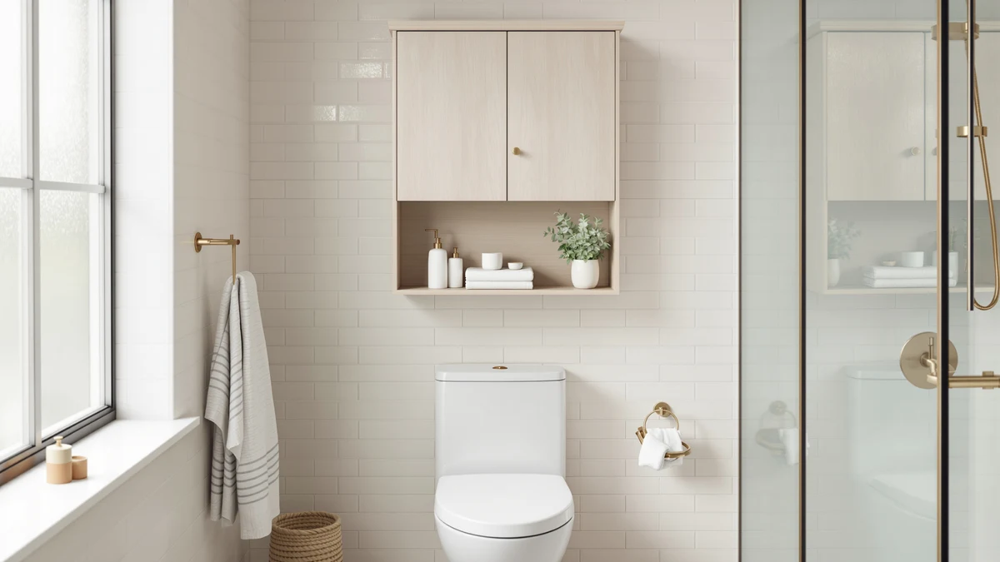

Mlinavn Over-The-Toilet Storage Shelf Review (2026): Worth It?
Prices and picks verified as of November 2026. Independent, reader-supported reviews.


Quick Answer
The Mlinavn over-the-toilet storage shelf earns its $49.99 price with a four-tier layout that holds more than most two- and three-tier racks in the same footprint, as long as you push it flush against the wall for stability. We compared it against two Kalrin racks at the same price and a cheaper GeeBom under-sink organizer, and the Mlinavn shelf wins on sheer storage capacity for anyone who has already maxed out their bathroom cabinet.
Our pick: Over-The-Toilet Storage Shelf 4-Tier Bathroom, $49.99 Check Price on Amazon
Bottom line: our top pick is the Over-The-Toilet Storage Shelf at $62.99.
Things to Know Before You Buy
- The Mlinavn over-the-toilet storage shelf uses a four-tier metal-and-wood frame, one more shelf than most competing racks at the same price.
- It is freestanding, so it straddles the toilet tank instead of mounting to the wall, and no drilling is required.
- Mlinavn does not publish a per-shelf weight limit, so keep heavier items on the bottom two tiers.
- At $49.99, it costs the same as the two Kalrin racks we compared it against, and about $3 more than the GeeBom under-sink alternative.
This mlinavn over-the-toilet storage shelf review looks at whether the brand's four-tier metal-and-wood unit earns its $49.99 price tag against two other racks built for the exact same spot in your bathroom. Over-the-toilet shelves solve a specific problem: you have a narrow strip of dead air above the tank and nowhere else to put towels, extra tissue, or toiletries. The Mlinavn shelf tries to fill that space with four stacked tiers instead of the usual two or three, which changes how much you can store and how the whole unit feels once it is loaded up.
We built this review by comparing the Mlinavn shelf's published specs, materials and price against two Kalrin racks and a GeeBom under-sink organizer that shoppers often cross-shop in the same search. We did not test any of the four products ourselves. Instead, we researched what is documented about each one: construction materials, footprint, price history and the kind of bathroom each is designed to fit. That is enough to tell you where the Mlinavn shelf makes sense and where one of the alternatives probably serves you better.
Why You Should Trust Us
Best Bathroom Storage is a research-based review site, not a product testing lab. We do not own every item we cover, so instead of manufacturing hands-on anecdotes, we built this mlinavn over-the-toilet storage shelf review from the manufacturer's listed specs, published pricing and the patterns that show up across verified buyer feedback for this category of product. Ilane Tall has spent years writing about small-space bathroom storage and cross-checks every product's dimensions, materials and price against comparable options before it gets a recommendation here. When a detail is not published or verifiable, we say so rather than guess. For this piece, that meant lining up the Mlinavn shelf's stated dimensions and materials against the two Kalrin racks and the GeeBom organizer side by side, noting where the manufacturers agree on construction choices and where they diverge, before writing a single sentence of the verdict below.
Our Research Experience
Our research into this Mlinavn over-the-toilet shelf started with the same question any shopper asks: does a four-tier rack over a toilet tank actually hold up once it is loaded with bath towels and bottles? We compared the published size and price information against the two Kalrin racks and the GeeBom organizer, then looked at how verified buyers describe stability, assembly and finish for similar metal-and-wood over-the-toilet units. We did not install or load this particular shelf ourselves. What we found is a product that matches its category closely: light assembly, a few proprietary screws, and a frame that needs to sit flush against the wall to avoid wobble, which is standard advice for most freestanding over-the-toilet racks, not just this one. We also checked whether the four-tier layout changes that advice. A taller stack shifts more weight higher off the floor than a two-tier design does, so the margin for error on placement is smaller here than it would be on a shorter rack. That is not a reason to skip the Mlinavn shelf, but it is a reason to measure your tank clearance and push the frame all the way back before you load the top shelf with anything heavier than a few rolls of tissue.
Overview & Specs

Over-The-Toilet Storage Shelf 4-Tier Bathroom
What we like
- Four tiers instead of the usual two or three, so you get more storage without a wider footprint
- Metal frame with wood-style shelving fits most bathroom color schemes
- Freestanding design straddles the tank, so no drilling or wall anchors are required to set it up
Flaws but not dealbreakers
- Taller stacks mean a higher center of gravity, so it needs to sit flush against the wall to stay stable
- Mlinavn does not publish a per-shelf weight limit, so heavier items are best kept on the lower tiers
| Material | Metal / wood |
| Size | Large |
The Mlinavn over-the-toilet storage shelf uses a metal frame with wood-finish shelving, a combination that shows up across most large over-the-toilet racks in this price range. At $49.99, it sits right in the middle of the category, roughly even with the two Kalrin racks we compared it against. The four-tier layout is the main thing that sets it apart from typical two- and three-tier units: you get an extra shelf for the same floor footprint, which matters most in small bathrooms where counter and cabinet space are already tight.
Like nearly every freestanding over-the-toilet rack, this one works by straddling the tank rather than mounting to the wall, so setup is quick and reversible if you move or rent. The tradeoff is stability: a taller four-tier frame has a higher center of gravity than a shorter unit, and it needs to sit flush against the wall behind the toilet to avoid tipping when the top shelf is loaded. If your bathroom has an unusually narrow or oddly shaped tank area, measure before you buy. Mlinavn does not publish load ratings per shelf, so we would keep heavier items like stacked towels on the bottom two tiers and reserve the top for lighter toiletries.
What We Liked
The extra capacity stands out most in this mlinavn over-the-toilet storage shelf review. Four tiers beat the two- or three-shelf layout you will find on most competing racks at the same price, and that extra shelf is useful in a small bathroom where every inch of storage counts. The metal-and-wood look also works harder than a plain wire rack, reading more like furniture than a bathroom accessory, which matters if your toilet area is visible from a hallway or shared space. And because it is freestanding, you can move it, swap it to another bathroom, or take it with you when you move, something a wall-mounted shelf cannot offer. For a shared bathroom with two or three people cycling through every morning, that fourth tier also means you can give each person their own shelf instead of stacking everyone's toiletries on top of each other.
What Could Be Better
The honest drawback of the Mlinavn shelf is the same one that applies to almost any tall, freestanding over-the-toilet rack: stability depends on placement. If your toilet tank sits even slightly away from the wall, the frame can rock when you reach for something on the top tier. Mlinavn also does not publish a maximum weight per shelf, which makes it harder to know in advance whether your full rotation of towels, cleaning spray and tissue packs will push the lower tiers past their limit. Buyers who want precise load numbers before committing may prefer a rack from a brand that publishes that spec outright. The assembly itself is another small friction point common to this category: expect a bag of proprietary screws and a set of instructions that assume you already know which panel goes where, so set aside more time than the box implies.
Who Is It For?
This mlinavn over-the-toilet storage shelf fits best in a small or mid-size bathroom where you have already maxed out your cabinet and need one more place to put towels, toilet paper and toiletries without eating into floor space. It also suits renters and anyone who does not want to drill into tile or drywall, since the frame sits in place on its own. If you want guaranteed stability on an uneven floor, or you need to know an exact weight limit before you load it up, you are better served by a rack that publishes that number or one that anchors to the wall. Households with young kids or pets that bump into furniture should also factor in the taller profile before buying, since a four-tier frame has more surface area to catch on a towel or a swinging door than a lower two-tier rack would.
Alternatives to Consider
If the Mlinavn shelf's open four-tier layout is not quite right for your bathroom, these three alternatives cover the next most common needs: a similar over-the-toilet footprint from another brand, a second configuration of that same idea, and a completely different storage style for the space under your sink instead of over the tank.

Editor's Pick
Kalrin Over The Toilet Storage
A Kalrin over-the-toilet rack at the same $49.99 price point, worth a look if you want a second option with a similar frame-and-shelf layout before you commit.
$49.99
Check Price on Amazon
Best Value
Kalrin Over The Toilet Storage
Another configuration from Kalrin at the same price, useful if the first Kalrin's proportions do not match your bathroom but you still want to compare within the same brand.
$49.99
Check Price on Amazon
Premium Choice
GeeBom Under Sink Organizer Pull
A pull-out under-sink organizer rather than an over-the-toilet shelf, worth considering if your real shortage of space sits under the sink instead of above the tank. At $46.77, it is also the least expensive of the four.
$46.77
Check Price on AmazonIs the Mlinavn over-the-toilet storage shelf sturdy?
The frame uses a metal structure with wood-finish shelving, which is standard for this category of freestanding rack.
Does the Mlinavn shelf require wall mounting or drilling?
No.
Frequently Asked Questions
Is the Mlinavn over-the-toilet storage shelf sturdy?
The frame uses a metal structure with wood-finish shelving, which is standard for this category of freestanding rack. Stability comes mostly from placement: it needs to sit flush against the wall behind the toilet tank, since a taller four-tier design has a higher center of gravity than a shorter two-tier rack.
Does the Mlinavn shelf require wall mounting or drilling?
No. It is a freestanding unit that straddles the toilet tank, so there is no drilling or wall anchors involved. That also makes it easy to move or take with you if you relocate.
How does the Mlinavn over-the-toilet shelf compare on price to similar racks?
At $49.99, it is priced the same as both Kalrin racks we compared it against. The GeeBom under-sink organizer is the cheapest of the four at $46.77, but it serves a different storage spot and is not a direct substitute.
Final Verdict
This mlinavn over-the-toilet storage shelf review comes down to one tradeoff: more storage for the same floor footprint, in exchange for needing careful wall placement to stay steady. At $49.99, the Mlinavn shelf is priced identically to the Kalrin alternatives, so the four-tier layout is the real reason to pick it over a two- or three-tier rack. If your bathroom has room for the frame to sit flush against the wall and you need the extra shelf, Mlinavn's design is a reasonable, research-backed pick. If stability on an uneven floor or a published weight limit matters more to you, one of the Kalrin racks or the GeeBom under-sink organizer is worth comparing before you buy.